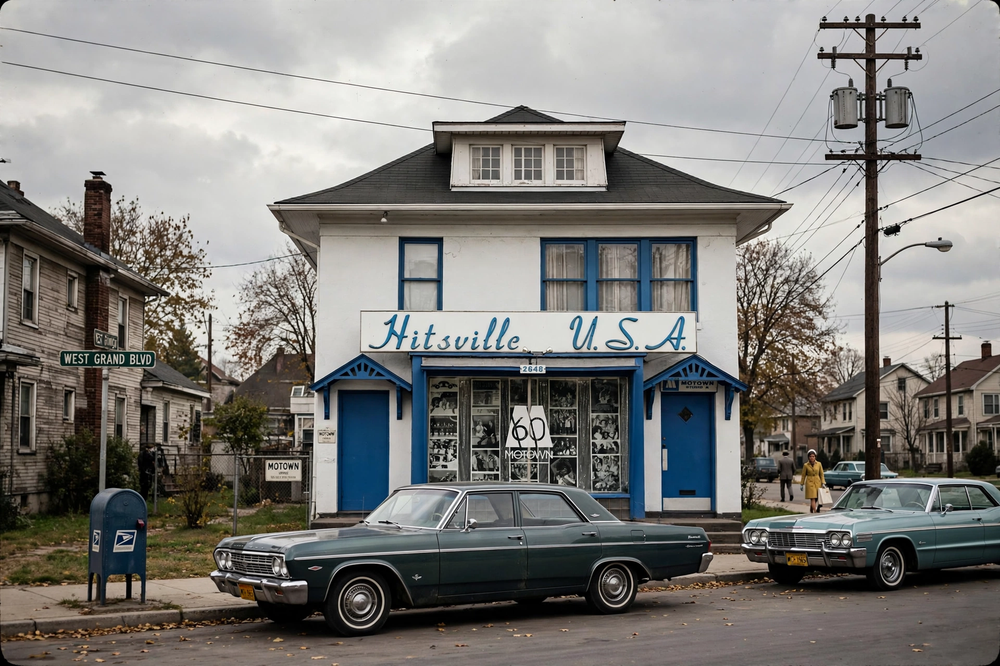

Motown is an American record label founded by Berry Gordy Jr. on January 12, 1959, in Detroit, Michigan. Originally incorporated as Tamla Records, the company took its name from a portmanteau of "motor" and "town", a reference to Detroit's status as the centre of the American automobile industry. Motown played a central role in the racial integration of popular music in the United States, achieving widespread crossover success during the 1960s with a distinctive style of soul music that came to be known as the "Motown sound".
| Motown | |
|---|---|
| Founded | January 12, 1959 |
| Founder | Berry Gordy Jr. |
| Headquarters | Detroit, Michigan (1959–1972); Los Angeles thereafter |
| Genre | Soul, R&B, pop |
| Parent | Universal Music Group |
Gordy founded the label with an $800 loan from his family. Its first headquarters, a converted house at 2648 West Grand Boulevard in Detroit, was dubbed "Hitsville U.S.A." and operated around the clock. A house band of local jazz musicians, later known as the Funk Brothers, backed most recordings, while songwriting teams such as Holland–Dozier–Holland and Norman Whitfield and Barrett Strong supplied polished, hook-driven material.
The label's first major hit was Barrett Strong's "Money (That's What I Want)" (1959). In 1961 the Marvelettes' "Please Mr. Postman" became Motown's first number-one pop single. Through the 1960s the label's roster — the Supremes, the Temptations, the Four Tops, Marvin Gaye, Stevie Wonder, Smokey Robinson and the Miracles, and the Jackson 5 — produced a long run of chart-topping singles. Diana Ross and the Supremes alone scored twelve number-one pop hits.
Gordy moved the company to Los Angeles in 1972 to pursue film and television, producing films such as Lady Sings the Blues. He sold Motown to MCA in 1988; the label later passed to PolyGram and then to Universal Music Group. The Motown Museum, established in the original Hitsville house in 1985, preserves the company's Detroit legacy.
Motown's blend of gospel-inflected vocals, tambourine-driven rhythms, prominent bass lines and orchestral sweetening defined an era of American pop and helped bring Black artists into the mainstream of the music business.
See also: Soul music · Detroit